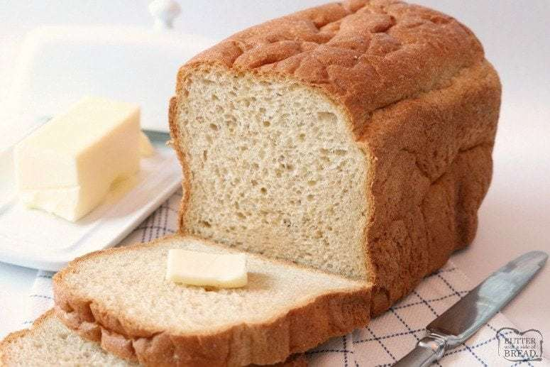

EASY HOMEMADE
BREAD RECIPE

Recipe
- In a large bowl, dissolve the sugar in warm water and then stir in yeast. Allow to proof until yeast
resembles a creamy foam. about 5 minutes.
- Mix salt and oil into the yeast. Mix in flour one cup at a time.
- Knead dough for 7 minutes. Place in a well oiled bowl, and turn dough to coat. Cover with a damp
cloth.
Allow to rise until doubled in a bulk, about 1 hour.
- Punch dough down. Knead for 1 minute and divide in half. Shape into loaves and place into two
greased
9x5 inch loaf pans.
- Allow to rise for 30 minutes, or until dough has risen 1 inch above pans.
- bake at 350 degrees F (175 degrees C) for 30-40 minutes
- Cool, brush with butter and enjoy!
Ingredients
- 2 cups warm water (110 degrees F/45 degrees C)
- 1/2 cup white sugar
- 1 1/2 tablespoons active dry yeast
- 1/4 cup vegetable oil
- 5-6 cup flour - You can use all purpose flour or bread flour